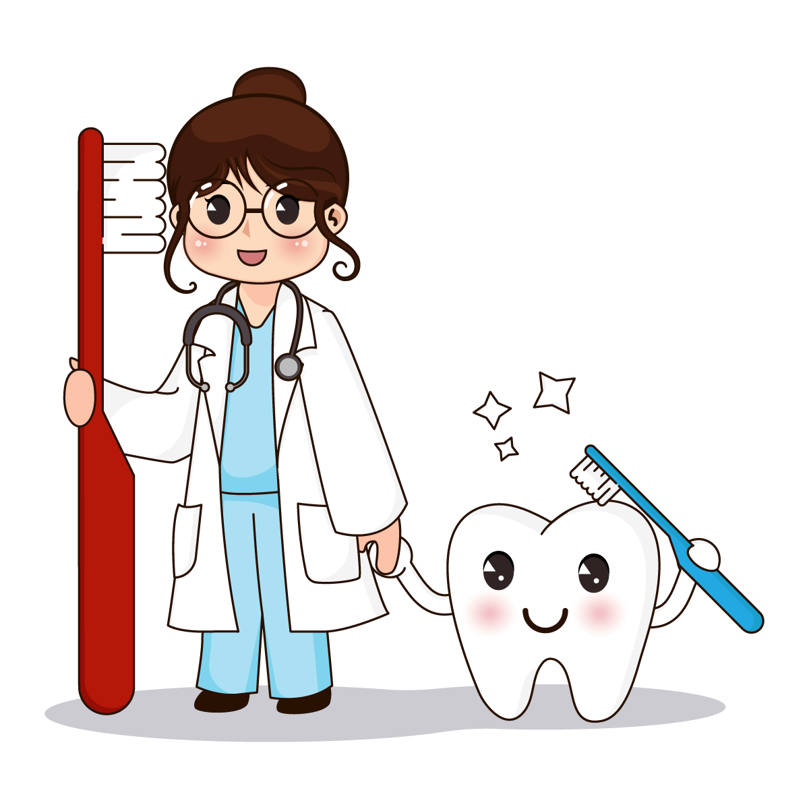

Qual é o proposito do projeto?

- Fazer a intermediação de pessoas que precisam de tratamento odontológico mas não tem como custear esse tratamento;
- Conscientização e orientações sobre saúde bucal e escovação correta;
- Projeto voluntário voltado para crianças e adolescentes.